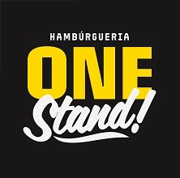

NO WHATSAPP DE QUEM PEDIU

ONE STAND HAMBURGUERIA restaurante🛒 Pedido nº 42 (1188) recebido com sucesso.
▶️ Entrega
Rua Luis Reis Santos, 320 - Cidade Dutra
Previsão: 40 a 60 min
19:21
🛵 Seu pedido saiu para entrega.
🏍️ Acompanhe a entrega
https://menu.beefood.com.br/oneburger/rastreio/Kq7Xb2Vn4pHs9dTmRcJw1e
19:58